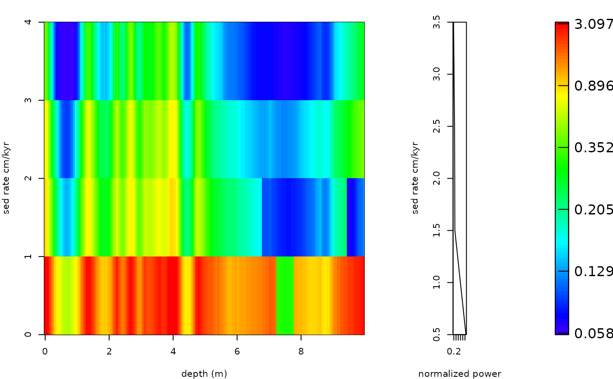

The plot_sed_model function is used plot/re-plot the results from the
flmw and sum_power_sedrate functions
Usage
plot_sed_model(
model_results = NULL,
plot_res = 1,
x_lab = "depth (m)",
y_lab = "sed rate cm/kyr",
keep_editable = FALSE,
palette_name = "viridis",
color_brewer = "viridis",
colour_brewer = NULL
)Arguments
- model_results
Sedimentation-rate modelling result to plot: the list returned by
flmwor bysum_power_sedrate(a list of depth x sedimentation-rate matrices plusdepthandy_axis). Required (Default=NULLgives an error).- plot_res
Which matrix of
model_resultsis plotted (integer index of the list element, or its name). Forflmwwithmethod = "classic":1: slope coefficient, 2: r squared, 3: number of components, 4: difference to origin;
5: slope coefficient percentile, 6: r squared percentile, 7: number of components percentile, 8: difference to origin percentile;
11 (or
"score_mat"): the combined score.
For
flmwwithmethod = "weighted"or"template": 1 (the score matrix). Forsum_power_sedrate: 1, sum of the maximum spectral power; 2, number of components (cycles).Default=1.- x_lab
Label of the depth axis (character).
Default="depth (m)".- y_lab
Label of the sedimentation-rate axis (character).
Default="sed rate cm/kyr".- keep_editable
Keep the plot layout and graphical parameters (
par) after plotting, so that extra elements can be added to the image (logical). WithFALSEthe previousparsettings are restored on exit.Default=FALSE.- palette_name
Name of the colour palette of the power (colour) scale, a character string. Which names are valid depends on
color_brewer:color_brewer = "grDevices":"rainbow","heat.colors","terrain.colors","topo.colors","cm.colors", or any of the 115hcl.colorspalettes (list them withgrDevices::hcl.pals()), for example"viridis","Plasma","Inferno","YlOrRd","Spectral","Blue-Red","Zissou 1".color_brewer = "viridis":"viridis","magma","inferno","plasma","cividis","rocket","mako","turbo".color_brewer = "RColorBrewer":"BrBG","PiYG","PRGn","PuOr","RdBu","RdGy","RdYlBu","RdYlGn","Spectral","Accent","Dark2","Paired","Pastel1","Pastel2","Set1","Set2","Set3","Blues","BuGn","BuPu","GnBu","Greens","Greys","Oranges","OrRd","PuBu","PuBuGn","PuRd","Purples","RdPu","Reds","YlGn","YlGnBu","YlOrBr","YlOrRd"(also listed bywr_brewer_palettes()).color_brewer = "colorRamps":"blue2green","blue2green2red","blue2red","blue2yellow","cyan2yellow","green2red","magenta2green","matlab.like","matlab.like2","ygobb".color_brewer = "scico"(all except"batlowK"need the scico package):"acton","bam","bamako","bamO","batlow","batlowK","batlowW","berlin","bilbao","broc","brocO","buda","bukavu","cork","corkO","davos","devon","fes","glasgow","grayC","hawaii","imola","lajolla","lapaz","lipari","lisbon","managua","navia","nuuk","oleron","oslo","roma","romaO","tofino","tokyo","turku","vanimo","vik","vikO".
Low power is drawn with the first colour of the palette and high power with the last.
Default="viridis".- color_brewer
Palette family from which
palette_nameis taken, a character string:"grDevices","viridis","RColorBrewer","colorRamps"or"scico"(the last one, except for"batlowK", needs the scico package). Seepalette_namefor the palette names of each family.Default="viridis".- colour_brewer
British spelling of
color_brewer, with the same options; if given (notNULL) it overridescolor_brewer.Default=NULL.
Value
Returns a plot of sedimentation rates vs depth and a value which was generated using
the flmw or sum_power_sedrate functions
Examples
# \donttest{
#estimate sedimentation rate for the the magnetic susceptibility record
# of the Sullivan core of Pas et al., (2018).
mag_wt <- analyse_wavelet(data = mag[1:200, ],
dj = 1/10,
lowerPeriod = 0.1,
upperPeriod = 32,
verbose = FALSE,
omega_nr = 10)
#increase n_simulations to better define the red noise spectral power curve
mag_wt_red_noise <- model_red_noise_wt(wavelet=mag_wt,
n_simulations = 3, # increase for a better constrained result
run_multicore=FALSE,
verbose=FALSE)
sedrates <- sum_power_sedrate(red_noise=mag_wt_red_noise,
wavelet=mag_wt,
percentile=0.75,
sedrate_low = 0.5,
sedrate_high = 4,
spacing = 1,
cycles = c(2376,1600,1180,696,406,110),
x_lab="depth",
y_lab="sedrate",
run_multicore=FALSE,
genplot = FALSE,
palette_name = "rainbow",
color_brewer= "grDevices",
verbose=FALSE)
plot_sed_model(model_results=sedrates,
plot_res=1,
x_lab = "depth (m)",
y_lab = "sed rate cm/kyr",
keep_editable=FALSE,
palette_name = "rainbow",
color_brewer= "grDevices")

# }